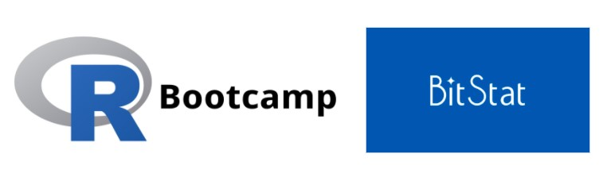
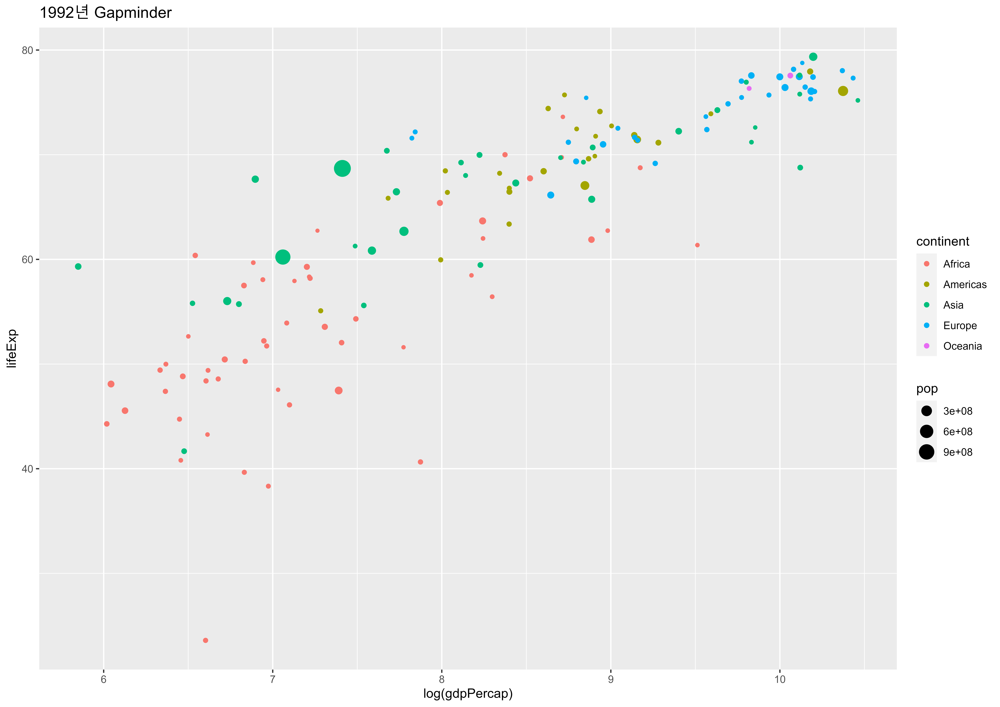
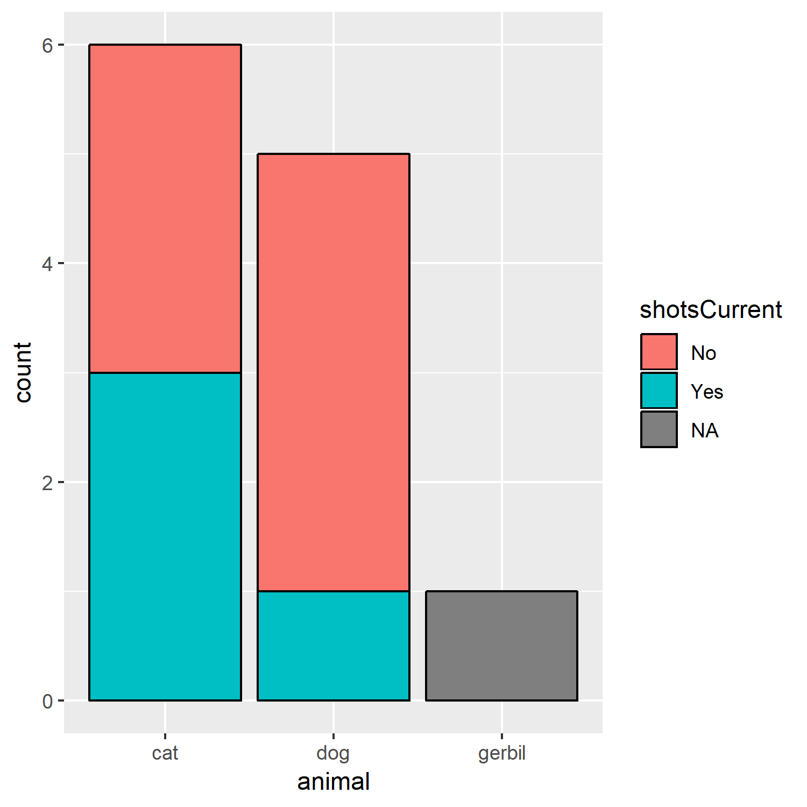
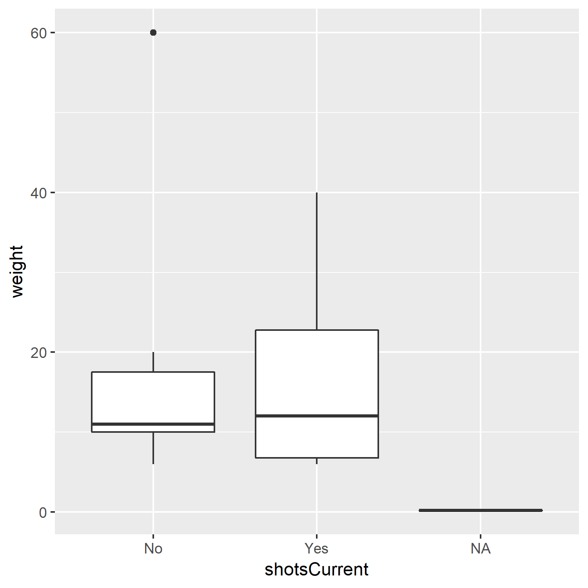
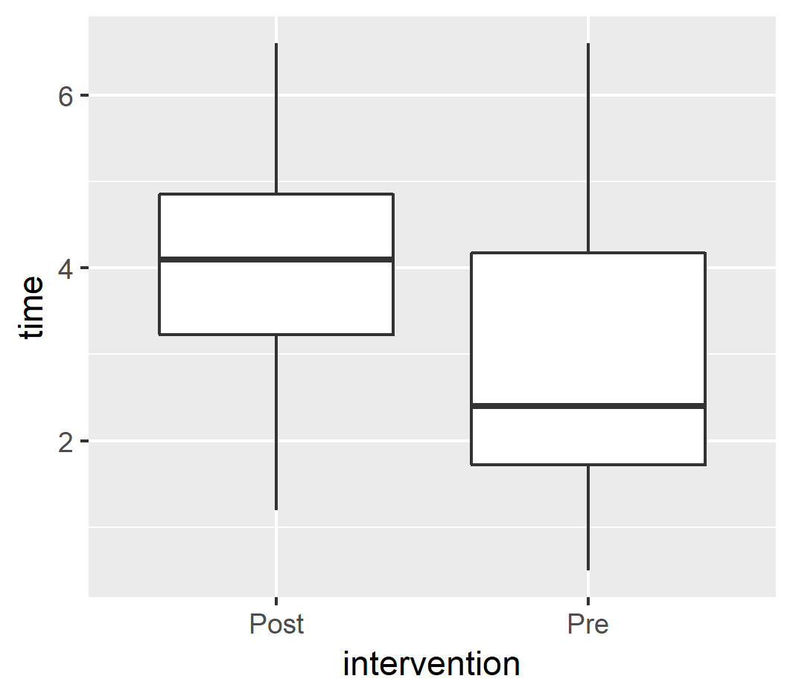

0장: 들어가며

디즈니 이영록님의 R-Bootcamp를 Tidyverse Korea 페이스북 그룹에 소개한 것을 시작으로 유충현님이 R-Bootcamp 인터랙티브 교육의 Backend 기술을 온라인 대화형 코스 플랫폼으로 소개한 후에 한글 번역을 R 신병훈련소에 마무리하여 공개해주셨습니다. R / Tidyverse 관련 교육이기는 하지만 인터랙티브 교육환경이 순도 100% R로 제작되지 않아 이광춘님이 learnr 코드로 작성하여 R 신병훈련소에 개발을 진행하여 공개해 주셨습니다. 향후 이런 기술은 오픈 통계 패키지 BitStat에 반영되어 많은 분들에게 도움이 되도록 R 사용자회가 노력을 경주하겠습니다.
1장: ggplot2의 마법
ggplot2로 데이터의 변수를 통계 플롯으로 시각화는 방법 학습
데이터프레임 소개
기본적으로 데이터프레임(data.frame)은 다음 특성을 갖는 표같은 형태를 갖추고 있다.

- 칼럼(column)은 각기 다른 자료형을 갖는다; 숫자(
numeric), 문자(character), 논리(boolean), 범주(factor). - 칼럼을 변수(variable)라고도 부른다.
- 행(row)은 단일 관측점에 대응된다.
- 특정 조건에 따라 부분집합(subset) 혹은 필터(filter) 작업을 수행할 수 있다.
데이터프레임의 개별 변수는 $ 연산자로 액세스할 수 있습니다. (예시: gap1992$pop). 그러나 우리는 이 방식을 거의 사용하지 않을 것입니다. tidyverse을 사용하면 이 연산자 없이 쉽게 변수를 액세스할 수 있기 때문입니다.
gap1992 데이터에 대해서 colnames()와 head()를 실행하여 각 컬럼의 데이터를 살펴봅니다. 그런 다음 nrow()를 사용하여 데이터 세트에 몇 개의 행(관측치)이 있는지 확인합니다. 답변을 제출하기 전에 콘솔에서 실행하세요.
gap1992 <- read.csv("data/gap1992.csv")
## gap1992 데이터프레임 살펴보기
## gap1992 칼럼명 살펴보기
## gap1992 행갯수 확인하기gap1992 <- read.csv("data/gap1992.csv")
## gap1992 데이터프레임 살펴보기
head(gap1992)
## gap1992 칼럼명 살펴보기
colnames(gap1992)
## gap1992 행갯수 확인하기
nrow(gap1992)힌트: gap1992 데이터세트의 변수 이름이 필요한 경우에는 head() 혹은 colnames() 혹은 nrow() 함수로 확인할 수 있습니다.
시각적 요소에 대한 고찰
이제 데이터 프레임에 대해 조금은 이해할 수 있습니다. 그러면 좀더 재미있는 영역으로, 데이터 프레임으로 그래프(플롯) 만들 수 있습니다. 먼저 플롯에 변수를 표현하는 방법에 대해서 생각해 볼 것입니다.

플롯을 그리기 위한 변수의 기하학적 매핑
통계 그래픽은 다음으로 구성됩니다.:
- 데이터(
data)의 변수를, - 심미적(
aes()thetic) 속성의, - 기하학적(
geom_etric) 객체에 매핑(mapping). - 역자 주)
- aesthetic 속성은 심미적 속성으로 번역되지만, 시각적으로 표현할 수 있는 속성들로 이해하세요. 앞으로 미적으로 표현합니다.
- geometric(기하학적)은 모양, 위치, 크기 등 공간에서의 도형의 성질을 의미합니다.
이것은 ggplot2 코드에서 다음처럼 번역됩니다.:
위의 예제 코드를 분리해 보겠습니다. ggplot2는 항상 ggplot() 함수의 호출로 시작합니다. 이 함수에는 다음과 같은 두 가지가 필요합니다.:
- 데이터(
data) - 이 사례에서는,gap1992. - 매핑(
mapping) -aes()함수를 이용한 미적 매핑.
변수를 미적 속성에 매핑하려면, 미적(aes()thetic) 매핑 함수인 aes() 함수를 사용해야 합니다. 이 예제에서는, x에 log(gdpPercap)를 y에 log(pop)를 매핑했습니다.
마지막으로는, geom_point() 함수로 플롯에 기하학적 요소를 중첩하여 시각화할 수 있습니다.
출력된 플롯을 기반으로, 아래 코드에서 적절한 변수를 x, y 미적 속성에 매핑하세요. 그리고 시각화 스크립트를 실행하세요. 답변을 제출하기 전에 콘솔에서 스크립트를 실행해 볼 수 있습니다.
library(ggplot2)
gap1992 <- read.csv("data/gap1992.csv")
ggplot(data = gap1992,
mapping = aes(
x = ____,
y = ____
)) +
geom_point()**힌트:** 그래프를 자세히 살펴보세요.
그리고 `gap1992` 데이터 세트의 변수 이름이 필요한 경우에는 `head()` 혹은 `colnames()` 함수로 확인할 수 있습니다.# 정답 ~~~~~
library(ggplot2)
gap1992 <- read.csv("data/gap1992.csv")
ggplot(data=gap1992,
mapping = aes(
x = log(gdpPercap),
y = lifeExp
)) +
geom_point()미적 매핑 더 알아보기
geom_point() 함수에는 연습문제보다 더 많은 미적 요소가 있습니다. 그리고 중요한 것은, ggplot2를 잘 다루기 위해서는 geom로 시작하는 함수들(이하 geom)의 미적 속성을 알아야한 다는 것입니다. geom에 매핑할 수 있는 미적 요소를 알고 싶을 경우에는 help(geom_point)처럼 help() 함수를 사용하세요.
geom_point() 함수에 매핑할 수 있는 미적 속성의 목록은 __도움말__을 참조하세요. 그리고 모든 미적 매핑을 살펴보세요.
점 대 선
ggplot2의 장점은 시각화 표현을 쉽게 바꿀 수 있다는 점입니다.
geom_point()를 geom_line()로 교체하여, x-y 좌표에서의 점들을 대신해서 선을 그릴 수 있습니다.
먼저 코드를 실행하여 점이 있는 플롯을 확인합니다. 그 다음에 geom_point()를 geom_line()으로 변경합니다. 무슨 일이 일어났나요? 데이터의 시각적 표현은 어떻게 변경되었습니까?
library(ggplot2)
gap1992 <- read.csv("data/gap1992.csv")
ggplot(gap1992, aes(x = log(gdpPercap), y = lifeExp, color=continent)) +
geom_point()library(ggplot2)
gap1992 <- read.csv("data/gap1992.csv")
ggplot(gap1992, aes(x = log(gdpPercap), y = lifeExp, color=continent)) +
geom_line()ggplot의 레이어인 기하학적 표현
우리는, 그리고 ggplot2는 그래프 표현을 단일 기하적 표현으로 제한하지 않습니다! 기하학적 표현(Geoms)을 그래프의 레이어(layers)로 생각할 수 있습니다. 따라서, + 심볼을 통해서 기본 ggplot() 구문에 기하학적인 표현을 추가할 수 있습니다.
geom_line()와 geom_point() 두 기하학적 표현을 다음 ggplot 코드에 추가합니다. 예상한대로 결과가 나타났습니까?
library(ggplot2)
gap1992 <- read.csv("data/gap1992.csv")
ggplot(gap1992, aes(x = log(gdpPercap), y = lifeExp, color=continent)) +
____ # <-- 코드 추가library(ggplot2)
gap1992 <- read.csv("data/gap1992.csv")
ggplot(gap1992, aes(x = log(gdpPercap), y = lifeExp, color=continent)) +
geom_line() + geom_point() # <-- 코드 추가ggplot2 빠른 리뷰
ggplot2 빠른 리뷰를 위해서 … 다음과 같이 예를 들어보겠습니다.
최종 과제: Gapminder 플롯의 재현
마지막 과제는 gap1992 데이터를 사용하여 아래 그래프를 완전히 다시 만드는 것입니다.
- 변수 이름을 기억해야 하는 경우는 콘솔에서
head(gap1992)또는colnames(gap1992)을 호출할 수 있습니다. - 변수를 올라른 미적 요소에 매핑하여, 위의 그래프를 다시 만듧니다. 답변을 제출하기 전에 콘솔에서 스크립트를 실행해 볼 수 있습니다.
library(ggplot2)
gap1992 <- read.csv("data/gap1992.csv")
ggplot(gap1992, aes(x = ,
y = ____,
color = ____,
size = ____
)) + ggtitle("Gapminder for 1992") +library(ggplot2)
gap1992 <- read.csv("data/gap1992.csv")
ggplot(gap1992, aes(x = log(gdpPercap),
y = lifeExp,
color = continent,
size = pop
)) + ggtitle("Gapminder for 1992") +
geom_point()이 챕터에서 배운 내용
ggplot2의 기본 문법.ggplot2의geom_point()와geom_bar()를 사용하여 x-y 좌표에 데이터 플로팅.aes()을 사용하여 데이터의 변수를 미적 요소에 매핑.geom는 그래프의 레이어에 해당하며,- 그것은
ggplot2가 꿰 멋진 그래프를 만들 수 있다는 것. - 당신이 이것을 할 수있다는 자심감 함양!
추가 리소스
- R For Data Science: 데이터 시각화: 데이터 과학을 위한 R의 시각화 챕터. 특히 유용한 것은 심미성 매핑과 자주 일어나는 문제들 섹션입니다.
ggplot2의 스케일과 좌표계처럼 플롯을 수정할 수 있는 또 다른 방법을 학습하려면 그래픽 레이어 문법을 참고하세요.
2장: ggplot2과 범주형 데이터
ggplot2 이용한 시각화 추가 정보 학습
범주형 데이터 리뷰
팩터(factors)는 R에서 범주형 데이터를 표현하는 방법입니다.
R에는 두 가지의 팩터가 있습니다.:
factor- 명목형(nominal) 데이터에 사용 (예, “오리”, “고양이”, “개”)ordered- 순서형(ordinal) 데이터에 사용 (예, “10-30”, “31-40”, “41-60”)
우리는 막대 그래프(barplots)를 조작하고 팩터를 사용하여 더 많은 정보를 추가할 것입니다.
다음은 ggplot2에서 팩터를 사용하는 방법에 사용할, 간단한 데이터 세트입니다.
library(dplyr)
pets <- read.csv("data/pets.csv")
## pets 데이터 조회
pets
## glimpse 함수를 이용한 데이터 구조 탐색
glimpse( ____ )library(dplyr)
pets <- read.csv("data/pets.csv")
## pets 데이터 조회
pets
## glimpse 함수를 이용한 데이터 구조 탐색
glimpse(pets)geom_bar()를 이용한 기본 막대 그래프
이제 pets 데이터 세트에 어떤 범주형 데이터 변수가 포함되었는지 알았으므로, geom_bar()로 막대 그래프를 그려 범주형 데이터를 시각화할 수 있습니다.
geom_bar()의 기본 동작은 범주형 데이터인 팩터의 수준별로 값의 개수를 카운트하는 것입니다. 여기서는 미적 요소인 y를 매핑하지 않습니다. 그 이유는 y 값이 카운트이기 때문입니다.
이 데이터 세트가 주어지면, 동일한 이름을 가진 애완동물이 몇 마리인지 알고 싶어질 것입니다.
ggplot 구문에서 x에 변수 name을 매핑합니다. 가장 인기있는 애완동물 이름은 무엇입니까?
library(ggplot2)
pets <- read.csv("data/pets.csv")
## 동물 이름별로 건수 세고, 막대 그래프의 기둥을 건수 크기로 채웁니다.
## theme()는 텍스트의 라벨이 겹치지 않도록 출력 각도를 조정할 수 있습니다.
ggplot(pets, aes(x= ____ )) + geom_bar() +
## 더 나은 가독성을 취해서 x-축 텍스트에 각도를 부여합니다.
theme(axis.text.x = element_text(angle=45))library(ggplot2)
pets <- read.csv("data/pets.csv")
## 동물 이름별로 건수 세고, 막대 그래프의 기둥을 건수 크기로 채웁니다.
## theme()는 텍스트의 라벨이 겹치지 않도록 출력 각도를 조정할 수 있습니다.
ggplot(pets, aes(x=name)) + geom_bar() +
## 더 나은 가독성을 취해서 x-축 텍스트에 각도를 부여합니다.
theme(axis.text.x = element_text(angle=45))스택 막대 그래프
얼마나 많은 애완 동물들이 예방접종을 하였는지 살펴봅니다. 우리는 fill에 변수 shotsCurrent를 매핑하여, 이를 수행할 수 있습니다.
미적 요소 fill에 shotsCurrent을 매핑하세요.
library(ggplot2)
pets <- read.csv("data/pets.csv")
## pets에서 유효한 변수를 찾아 fill에 매핑합니다.
ggplot(pets, aes(x=animal, fill = ____ )) +
geom_bar(color="black")library(ggplot2)
pets <- read.csv("data/pets.csv")
## pets에서 유효한 변수를 찾아 fill에 매핑합니다.
ggplot(pets, aes(x=animal, fill=shotsCurrent)) +
geom_bar(color="black")퀴즈

비율 막대 그래프
우리는 서로 다른 범주간의 상대적 비율에만 관심이 있을 수 있습니다.
이것을 시각화하는 것은 비율과 관련된 다양한 2 x 2 검정에 유용합니다. position = "fill" 매핑을 통해서, 우리는 카운트보다 비율을 표현할 수 있습니다.
geom_bar() 함수의 position 인수값을 "fill"로 변경하세요. 접종하지 않은 개는 몇 퍼센트입니까?
library(ggplot2)
pets <- read.csv("data/pets.csv")
ggplot(pets, aes(x=animal,fill=shotsCurrent)) +
geom_bar(position= ____, color="black")library(ggplot2)
pets <- read.csv("data/pets.csv")
ggplot(pets, aes(x=animal,fill=shotsCurrent)) +
geom_bar(position= "fill", color="black")병렬 막대 그래프
우리는 개별 범주 안의 수준별 막대를 쌓는 스택 막대 그래프 대신, 개별 범주 안의 수준별 막대들을 병렬로 배치하는 병렬 막대 그래프를 그릴 수 있습니다.
geom_bar() 함수의 position 인수값을 "dodge"로 변경하세요.
library(ggplot2)
pets <- read.csv("data/pets.csv")
ggplot(pets, aes(x=animal,fill=shotsCurrent)) +
geom_bar(position= "____", color="black")library(ggplot2)
pets <- read.csv("data/pets.csv")
ggplot(pets, aes(x=animal,fill=shotsCurrent)) +
geom_bar(position= "dodge", color="black")그래프에서의 패싯
또 다른 팩터 변수가 있고, 당신은 이 팩터를 기반으로 플롯을 계층화하려고 합니다. 당신은 해당 변수의 이름을 패싯(facet)으로 지정하여 이를 수행할 수 있습니다.
여기서 우리는, 막대 그래프에서 shotsCurrent을 패싯으로 지정합니다.
이 코드를 실행하면, 각 패싯의 범주에서 몇몇 수준의 공백이 있음을 알 수 있습니다. 우리는 facet_wrap() 함수의 scale="free_x" 인수를 추가해서 각 패싯에서 이 공백을 제거할 수 있습니다.
scale 인수값에 free_x을 대입합니다. “Morris”라는 이름의 애완동물 중에서 몇마리가 접종하지 않았습니까?
library(ggplot2)
pets <- read.csv("data/pets.csv")
ggplot(pets, aes(x=name)) + geom_bar() +
facet_wrap(facets= ~ shotsCurrent, scale= ____) +
theme(axis.text.x = element_text(angle=45))library(ggplot2)
pets <- read.csv("data/pets.csv")
ggplot(pets, aes(x=name)) + geom_bar() +
facet_wrap(facets=~shotsCurrent, scale= "free_x") +
theme(axis.text.x = element_text(angle=45))빠른 리뷰
실습: 막대 그래프 그리기
이제 당신이 배운 모든 것을 하나의 막대 그래프에 표현할 것입니다.
주어진 pets 데이터 프레임으로: + 동물의 유형(animal)별 건수를 연령대(ageCategory)별로 살펴볼 수 있는 스택 비례 막대 그래프를 그립니다. + shotsCurrent 변수로 패싯을 만듧니다.
예방 접종을 맞은 애완 동물의 비율이, 연령대로 동일한가요?
library(ggplot2)
pets <- read.csv("data/pets.csv")
ggplot(pets, aes(x=ageCategory, fill= ____ )) +
## 다음에는 어떤 인수값을 넣어야 할까요?
geom_bar(position = ____ ) +
facet_wrap(facets = ____ , scale = ____ )어떤 변수를 `x`, `fill` 인수에 매핑시킬 것인지, 어떤 값을 `position` 인수값에 사용할 것인지 생각하세요.
마지막으로, 변수를 어떻게 패싯화시킬 지 생각하세요.library(ggplot2)
pets <- read.csv("data/pets.csv")
ggplot(pets, aes(x=ageCategory, fill=animal)) +
## 다음에는 어떤 인수값을 넣어야 할까요?
geom_bar(position = "fill") +
facet_wrap(facets=~shotsCurrent, scale = "free_x")박스 플롯
박스 플롯을 사용하면 범주형 변수(shotsCurrent)별로 연속형 변수(weight)의 분포를 파악할 수 있습니다.

(역자 주: 박스 플롯의 굵은 실선은 평균이 아니라 중위수(median)를 나타냅니다. 그러므로 이 문제의 예문에서는 평균이라는 표현보다는 중위수가 더 정확한 표현입니다. 중위수는 값을 크기 순서로 정렬했을 때, 정가운데에 위치한 값을 의미합니다. 극단값이 포함된 데이터에서의 평균윤 극단값의 영향을 받아서 왜곡되는 단점이 있습니다. 중위수는 극단값에 영향을 받지 않는 순서통계량이자 대표치입니다. 그러나 예문에서는 원 저작자의 표현인 평균을 사용하였습니다.)
geom_boxplot() 실행해보기
애완 동물의 종류(animal)별로 체중(weight)에 대한 박스 플롯을 그리세요. 동물의 종류에 따라 체중의 차이가 있나요?
library(ggplot2)
pets <- read.csv("data/pets.csv")
ggplot(pets, aes(x= -----, y= -----)) + geom_boxplot()어떤 변수를 미적 속성에 매핑할지 생각해 보세요.library(ggplot2)
pets <- read.csv("data/pets.csv")
ggplot(pets, aes(x= animal, y= weight)) + geom_boxplot()바이올린 플롯
바이올린 플롯(Violin plots)은 데이터를 시각화하는 또 다른 유용한 방법입니다. 데이터에 대한 보다 미묘한 차이를 제공합니다. y축을 중심으로 미러링된 밀도 플롯입니다.
이 플롯은 y-축을 중심으로 데이터의 밀도(density)를 대칭되게 표현하여, 미묘한 분포도 파악할 수 있도록 도와줍니다.
(역자주: 대칭된 밀도의 모양이 마치 바이올린처럼 보여서 바이올린 플롯이라 부릅니다. 밀도란, 연속형 데이터들이 몰려 있는 정도를 나타내는 통계량입니다. 바이올린 플롯에서 넓은 면적 부근에 데이터가 좀 더 많이 몰려서 분포한다고 판단하면 됩니다. 반대로 좁은 면적에는 데이터가 희박하게 분포함을 의미합니다.)
- ggplot 구문에
geom_violin()를 추가하세요. - 박스 플롯과 바이올린 플롯을 비교하면 어떤가요?
- 더 많은 정보를 표현하나요? 혹은 표현하는 정보가 더 적나요?
library(ggplot2)
pets <- read.csv("data/pets.csv")
ggplot(pets, aes(x=animal, y=weight, fill=animal)) +
## 다음에 무엇을 입력해야 할까요?
____library(ggplot2)
pets <- read.csv("data/pets.csv")
ggplot(pets, aes(x=animal, y=weight, fill=animal)) +
## 다음에 무엇을 입력해야 할까요?
geom_violin()실습: 펫은 얼마나 무겁나요?
- 펫(
animal) 종류별 체중(weight)을 시각화합니다. - 한 플롯에 박스 플롯과 바이올린 플롯을 그립니다.
- 결론은 어떻나요? 어떤 동물이 다른 동물보다 평균 체중이 더 높나요?
library(ggplot2)
pets <- read.csv("data/pets.csv")
ggplot(pets, aes(x=___, y=___, fill=___)) +
## 박스 플롯과 바이올린 플롯을 서로 다른 레이어로 출력하세요.
____library(ggplot2)
pets <- read.csv("data/pets.csv")
ggplot(pets, aes(x=animal, y=weight, fill=animal)) +
## 박스 플롯과 바이올린 플롯을 서로 다른 레이어로 출력하세요.
geom_boxplot() +
geom_violin()이 챕터에서 배운 내용
- 범주형 데이터를 시각화하는 방법
- 세 가지 플롯:
geom_bar(),geom_boxplot(),geom_violin() - (fill, x, y)와 같은 기하학적 요소에 미적 속성 매핑
geom_bar()의 옵션 적용: position = “fill” (비율 막대 그래프), position = “dodge” (병렬 막대 그래프)facet_wrap()을 사용하여 그래프를 계층화하는 방법- ggplot에서 여러 플롯을 한 플롯에 표현하는 방법
추가 리소스:
- 우리가 팩터라고 부르는 데이터 타입에 대해서 더 알고싶으면 R for Data Science: 팩터형을 참고하세요. 특히 팩터 순서 수정하기와 팩터 레벨 수정하기의 정보가 유용합니다.
- R4DS: 데이터 시각화: Facets
3장: dplyr 입문
우리는 ggplot2 패러다임에 부합하는 데이터 세트를 다뤄보았습니다. 그러나 우리가 접하는 대부분의 데이터는, 실제로는 지저분하거나(결측치 등이 포함되며) 완전히 다른 형식입니다. 이 장에서는 데이터 프레임을 조작할 수 있는, ‘dplyr’라는 ’tidyverse’ 패키지 군의 가장 강력한 도구 중 하나를 살펴보겠습니다. dplyr는 데이터 클린징을 수행하는 대부분의 성가신 작업에 대응하는 함수들이 있어 매우 유용합니다.
특히, dplyr에서 제공하는 다음의 여섯 가지 기본적인 동작을 살펴보겠습니다.:
filter()mutate()group_by()/summarize()arrange()select()
이 과정에서 우리는 몇 가지의 데이터 조작 과제를 수행할 것입니다. 당신은 곧 dplyr 전문가가 될 것입니다!
dplyr 문법에 대해서 리마인드 하기 위해서 dplyr 치트시트(컨닝 페이퍼)가 유용할 수 있습니다. 별도의 창에 띄워두면 많은 도움이 됩니다.
(역자 주) dplyr 치트시트가 2021년 7월 업데이트 되었습니다. 업데이트된 것을 원하시면, 최신 dplyr 치트시트를 사용하세요. 서로 보완재가 될 수 있어 공유합니다.
또한 데이터 프레임의 변수 이름을 알 필요가 있을 경우에는 다음 예제처럼 컬럼 이름을 조회하십시요. biopics 데이터 프레임의 모든 변수 이름을 얻을 수 있습니다.:
만약 함수에 대한 자세한 정보를 원할 경우에는 다음 mutate() 함수 도움말을 호출하는 것처럼 도움말을 요청하십시요.:
다음 학습으로 넘어갑니다!
할당에 대한 이해
다음 학습을 수행하기 위해서는, 함수의 계산 결과를 변수에 할당하는 방법을 배울 필요가 있습니다.
예를 들어, <- 연산자를 사용해서 1 + 2 연산의 결과를 sumOfTwoNumbers라는 변수에 할당할 수 있습니다. 이 연산자를 할당 연산자라 부릅니다.
=를 사용해서 값을 변수에 할당할 수도 있습니다. 그러나 이 방법은 값의 같음을 테스트하는 비교 연산자 ==와 혼동할 수 있습니다.
변수에 할당된 무엇인가는 아래 예제처럼 다른 표현식에서 사용할 수 있습니다.
이것이 할당의 기본적인 사항입니다. 우리는 dplyr로 데이터를 정제할 때, 할당 연산자를 사용할 것입니다.
(역자 주) R은 여기서 언급하지 않은 연산자를 포함하요 꿰 많은 많은 할당 연산자를 제공합니다. 그러나 일반적인 값의 할당에서는 할당 연산자로는 <-를 사용하십시요. 그리고 함수 안에서 인수에 인수값을 대입하는 경우에만 = 연사자를 사용하십시요. 이것은 암묵적으로 룰로 R 고수들이 권장하는 방법입니다.
할당 연산자 실습 지침
newValue에10을 할당합니다.- 그런 다음,
newValue * 5을 계산하여 결과를multValue에 할당합니다. multValue의 결과를 출력합니다.
## newValue에 할당
newValue <-
## newValue를 사용해서 multValue 계산
multValue <-
## multValue 결과 출력
multValue## newValue에 할당
newValue <- 10
## newValue를 사용해서 multValue 계산
multValue <- newValue * 5
## multValue 결과 출력
multValue몇 가지 데이터 조작 방법
우리는 fivethirtyeight 패키지의 biopics 데이터 세트를 사용하여 dplyr 학습을 수행할 것입니다. 이 데이터 세트는 서로 다른 761 개의 전기 영화(유명 인사의 생애에 대한 영화) 정보를 담고 있습니다.
학습 지침
biopics데이터 세트로summary를 실행합니다. 이미 데이터는 준비해 놓았습니다.country변수에는 몇 개의 범주(수준, levels)가 있나요?
library(dplyr)
biopics <- readRDS("data/biopics.rds")
## 여기에서summary을 실행합니다.
____
## 여기에 country(국가) 범주의 개수를 표시합니다.
____`levels()` 함수를 사용하면 범주의 개수를 셀 수 있습니다.library(dplyr)
biopics <- readRDS("data/biopics.rds")
## 여기에서summary을 실행합니다.
summary(biopics)
## 여기에 country(국가) 범주의 개수를 표시합니다.
length(levels(biopics$country))dplyr::filter()
filter()는 매우 유용한 dplyr의 명령입니다. 이것은 변수의 기준(논리 조건식)에 따라서 데이터 프레임의 부분집합을 생성합니다.
예를 들면, biopics 데이터 세트 중에서 영국(UK)에서 제작된 영화를 부분집합으로 추출하려면 다음의 dplyr 구문(코드)을 사용합니다.
여기서 주의해야할 세 가지 사항:
filter()의 첫번 째 인수값은 데이터 세트입니다.잠시 후에 우리는 또다른 변형을 볼 수 있을 겁니다.biopics$country처럼, 데이터 프레임의 변수를 액세스하기 위해서$연산자를 사용하지 않아도 됩니다. 대신, 단지 변수 이름인country만 사용하면 됩니다.
- filter 구분에는
==를 사용합니다.==은 같음을 검사하는 비교 연산자입니다. 그리고=는 어떤 값을 할당하는 할당 연산자임을 기억하십시요.(이 두 가지를 혼동하는 경우가 종종 있습니다.)
학습 지침
Criminal영화만 표시되도록biopics를 필터링합니다.(당신은biopics의 변수인type_of_subject를 사용해야 합니다.)nrow(crimeMovies)를 사용해서 몇 건이 필터링되었는지 확인합니다.
library(dplyr)
biopics <- readRDS("data/biopics.rds")
# 여기에 filter 구문을 입력하세요.
crimeMovies <- filter( ____ )
# crime 영화가 몇 건인지 확인하세요.
____library(dplyr)
biopics <- readRDS("data/biopics.rds")
# 여기에 filter 구문을 입력하세요.
crimeMovies <- filter(biopics, type_of_subject == "Criminal")
# crime 영화가 몇 건인지 확인하세요.
nrow(crimeMovies)비교 연산자와 결합 연산자
다음의 filter() 구문을 살펴 보세요.:
여기서 주의해야할 세 가지 사항:
- 우리는 비교 연산자인
>를 사용했습니다. 그리고 기본 비교 연산자에는>(크다),<(작다),==(같다) and!=(같지 않다)가 있습니다. - 우리는
&연산자(AND)를 사용하여 또다른 표현식인type_of_subject == "Criminal"을 연결했습니다. 그리고 당신이 사용해야 할 또 다른 결합 연산자는 OR에 해당하는|연산자입니다. - 표현식을 결합하는 것은
filter()의 사용에 있어서 아주 강력한 기능이 될 것입니다. 하지만 자칫 잘못 사용하면 논리적인 오류가 포함되어 예기치 않는 결과가 발생하는, 골치거리가 될 수도 있습니다. 그러므로 여러분은 결합 표현식을 사용할 때, 실수가 없도록 주의깊게 사용해야 합니다.
(역자 주) 원문에는 &와 |을 결합 연산자(chaining operators)라고 표현했는데, 이것은 올바른 표현이 아닙니다. &와 |는 논리 연산자(logical operators)입이다. &은 논리 곱인 (AND)를 의미하고, |은 논리 합인 (OR)를 연산합니다. 논리 연산자는 논리 참인 TRUE와 논리 거짓인 FALSE를 피연산자로 사용하는 연산자입니다. 연산자 우선 순위 중 비교 연산자가 논리 연산자보다 앞서므로, 비교 연산자의 표현식이 먼저 수행되어 논리 참/거짓을 반환하고, 이를 피연사자로 삼아서 논리 연산자가 수행되는 것입니다. 나중에 수행되는 논리 연산자가 마치 앞과 뒤의 비교 연산자를 결합하는 구조로 보여, 결합 연산자라 표현한 것 같습니다. (그러나 이 학습에서는 원문의 오류는 잡지만, 원 저작자의 의견을 존중하는 차원에서 원 저작자의 표현을 그대로 사용하였습니다.)
학습 지침
&를 사용해서 다른 표현식person_of_color == FALSE을 연결합니다.- 필터링 결과가 몇 건의 관측치를 반환하는지 출력하세요.
library(dplyr)
biopics <- readRDS("data/biopics.rds")
# 이 filter 구문 끝에 비교 연산 표현식을 추가하세요.
crimeFilms <- filter(biopics, year_release > 1980 &
type_of_subject == "Criminal")
# crimeFilms이 몇 건인지 보이세요.
____library(dplyr)
biopics <- readRDS("data/biopics.rds")
# 이 filter 구문 끝에 비교 연산 표현식을 추가하세요.
crimeFilms <- filter(biopics, year_release > 1980 &
type_of_subject == "Criminal" & person_of_color == FALSE)
# crimeFilms이 몇 건인지 보이세요.
nrow(crimeFilms)비교 연산의 연결 퀴즈
question("어떤 필터링이 더 많은 건수의 부분집합을 반환할까요?",
answer("filter(biopics, year_release > 1980 & type_of_subject == 'Criminal')",
message = "두 가지 기준을 모두 적용하므로 이 부분 집합이 더 작습니다."),
answer("filter(biopics, year_release > 1980 | type_of_subject == 'Criminal')",
message = "논리 합(OR, `|`)을 사용하면, 논리 곱보다 부분집합이 더 커집니다.",
correct = TRUE),
allow_retry = TRUE
)잘 모르겠으면 콘솔을 실행해 보세요.library(dplyr)
biopics <- readRDS("data/biopics.rds")
and_result <- filter(biopics, year_release > 1980 & type_of_subject == 'Criminal')
nrow(and_result)
or_result <- filter(biopics, year_release > 1980 | type_of_subject == 'Criminal')
nrow(or_result)%in% 연산자
범주형 변수에서 여러 범주(수준, levels)를 선택하려면 어떻게 할까요? 다음처럼 %in% 연산자를 사용하면 됩니다. 선택해야할 여러 값들은 c() 함수를 사용해서 벡터로 만들어야 합니다. 그리고 값을 매치하기 위해서 선택해야하는 값은 정확해야 하며, 대소문자를 구분하니 대소문자도 일치해야 합니다. (“UK”, “Uk”, “uk”는 서로 다른 값입니다)
학습 지침
type_of_subject변수의 값이Musician,Artist,Singer인 영화를 추출합니다.- 추출한 결과를
biopicsArt에 할당하세요.
library(dplyr)
biopics <- readRDS("data/biopics.rds")
biopicsArt <- biopics %>%
filter( ____ %in% ____ )
head(biopicsArt)library(dplyr)
biopics <- readRDS("data/biopics.rds")
biopicsArt <- biopics %>%
filter(type_of_subject %in% c("Musician", "Artist", "Singer"))
head(biopicsArt)결측치 제거
filter()를 활용할 수 있는 트릭 중에 결측치를 제거하는 것이 있습니다. R 데이터에서 결측치는 NA로 표현합니다. 당신은 is.na()를 이용해서 NA가 포함된 데이터를 제거할 수 있습니다. 예를 들면 다음과 같습니다.:
is.na(box_office) 앞에 있는 !는 논리 부정(NOT)을 나타내는 논리 연산자입니다. 이것은 is.na 구문의 결과에서 모든 TRUE를 FALSE로, 모든 FALSE를 TRUE로 바꿉니다. NA가 아닌 모든 것을 유지하고 싶어서 논리 부정 연산자 !를 사용하는 것입니다.
학습 지침
biopics에서 NA를 제거하는 필터링을 수행하세요,그리고 결과를filteredBiopics에 할당합니다.biopics의 건수와filteredBiopics의 건수를 비교합니다.- 몇 건의 결측치를 제거했나요?
library(dplyr)
biopics <- readRDS("data/biopics.rds")
filteredBiopics <- filter( ____ )
# biopics의 데이터 건수를 조회합니다.
____
# filteredBiopics의 데이터 건수를 조회합니다.
____library(dplyr)
biopics <- readRDS("data/biopics.rds")
filteredBiopics <- filter(biopics, !is.na(box_office))
# biopics의 데이터 건수를 조회합니다.
nrow(biopics)
# filteredBiopics의 데이터 건수를 조회합니다.
nrow(filteredBiopics)dplyr::mutate()
mutate()는 dplyr에서 유용한 기능 중 하나입니다. 당신은 이 기능을 통해서 데이터(데이터 프레임에서의 변수)를 변환하고, 그것을 새로운 변수 이름으로 데이터 프레임에 추가할 수 있습니다. 예를 들어, box_office을 number_of_subjects로 나누어 표준화 시킨 값을 normalized_box_office에 할당합니다:
여기서 우리는 무슨 작업을 수행했을까요? 우리는 mutate() 함수를 사용하여 normalized_box_office라는 새로운 열을 데이터 프레임에 추가했습니다. 이 신규 변수는 모든 행(관측치)에 대해서 box_office을 number_of_subjects로 나눈 값으로 만들어집니다.
학습 지침
subject_race와subject_sex의 문자열을 묶어서 신규 변수race_and_gender을 파생합니다. 그리고biopics2라는 이름의 새로운데이터 프레임을 만드세요.- 신규로 파생된 변수가 정확하게 만들어졌는지 확인하기 위해
head()함수로 앞의 몇 건을 조회하세요.
두 개의 문자열을 묶기 위해서는 paste() 함수를 사용하면 됩니다.
library(dplyr)
biopics <- readRDS("data/biopics.rds")
# 여기에 mutate()을 사용해서 race_and_gender 변수를 파생하세요.
biopics2 <- mutate( ____ )
# head()로 biopics2의 앞 부분 몇 건을 조회합니다.
___`paste(subject_race, subject_sex)`library(dplyr)
biopics <- readRDS("data/biopics.rds")
# 여기에 mutate()을 사용해서 race_and_gender 변수를 파생하세요.
biopics2 <- mutate(biopics, race_and_gender = paste(subject_race, subject_sex))
# head()로 biopics2의 앞 부분 몇 건을 조회합니다.
head(biopics2)파생한 변수를 바로 사용할 수 있습니다!
mutate()의 가장 큰 특징이자 장점은, mutate() 구문에서 생성한 신규 변수를 구문 안에서 바로 사용할 수 있다는 것입니다. 다음 코드로 확인해 보세요.:
mutate() 구문의 첫번 째 영역에서 box_office_year을 정의하였고, 바로 이것을 두번 째 영역에서 box_office_subject 변수를 만드는 데 사용했습니다.
(역자 주) 이 기능은 한번의 mutate() 함수의 호출에서 여러 변수를 파생할 수 있다는 것을 의미합니다. 그리고 기술한 표현식의 순서대로 변수가 만들어지며, 후 순위의 표현식에서는 선 순위에 만들어진 변수를 사용할 수 있습니다. mutate()의 이 기능은 실무에서 유용하게 응용됩니다. 한번의 함수 호출에서 순차적으로 새로운 변수를 만들면, 불필요한 반복적인 연산을 줄일 수 있기 때문입니다. 데이터를 조작 전문 도구인 SQL이나 여러 툴에서 지원하지 않는 기능입니다.
학습 지침
- 하나의
mutate()구문에서 먼저 만들어진box_office_year변수를number_of_subjects로 나눠box_office_y_s_num라는 신규 변수를 정의합니다. - 결과를
mutatedBiopics에 할당합니다.
library(dplyr)
biopics <- readRDS("data/biopics.rds")
mutatedBiopics <- mutate(biopics,
box_office_year = year_release * box_office,
box_office_subject = paste0(box_office_year, subject),
box_office_y_s_num= ____ )
mutatedBiopics`box_office_y_s_num=box_office_year/number_of_subjects` 를 추가하세요.library(dplyr)
biopics <- readRDS("data/biopics.rds")
mutatedBiopics <- mutate(biopics,
box_office_year = year_release * box_office,
box_office_subject = paste0(box_office_year, subject),
box_office_y_s_num = box_office_year/number_of_subjects)
mutatedBiopicsmutate()의 또다른 용도
library(dplyr)
biopics <- readRDS("data/biopics.rds")
mutate(biopics, subject = paste(subject, year_release))filter()와 mutate()의 차이점
파이프 연산자: %>%
dplyr 문법의 또 다른 한 부분인 %>%연산자를 소개합니다. %>%을 파이프 연산자(pipe operator)라 부릅니다. ggplot2 구문에서의 +와 비슷한 기능을 한다고 생각하면 됩니다.
%>% 연산자는 앞 구문 실행 결과인 출력값을 가져다가 다음 구문의 입력값으로 사용합니다. 그러므로 파이프 연산자를 사용한 아래 구문은,
biopics %>% filter(race_known == "Known") %>%
mutate(poc_code = as.numeric(person_of_color))다음처럼 해석할 수 있습니다.:
biopics데이터를,filter()에 보내서, 입력받은 데이터에race_known == "Known"조건의 필터 연산을 수행한 후 그 결과를,mutate()에 보내서, 입력받은 데이터로poc_code라는 새 변수를 정의합니다.
파이프 연산을 적용하면, filter()에 data 인수를 기술하지 않습니다. 왜냐하면 data 인수값은 파이프에 의해서 filter()에 자동으로 공급되기 때문입니다. mutate()도 마찬가지입니다.
tidyverse의 파이프 연산자 %>%는 tidyverse 패키지군의 여러 함수를 연결할 수 있습니다. 이것은 tidyverse의 가장 강력한 기능 중의 하나입니다.
어떤 처리를 수행하는 작업의 표준화된 연결을 파이프라인(pipeline)이라 합니다. 데이터 조작을 하는 일련의 과정을 파이프라인으로 만드는 것은 좋은 시도입니다. 수신 데이터에 파이프라인을 적용하면 ggplot2과 유사한 방법으로, 동일한 포맷을 갖는 데이터를 출력으로 보낼 수 있습니다.
(역자 주) 파이프라인(pipeline)은 마치 여러 개의 파이프를 연결하여 송유관을 만드는 작업과 유사합니다. 여러 마디의 파이프를 심리스(Seamless, 끊김없이 매끄럽게)하게 연결하여 원하는 장소에 안정하게 원유를 공급하는 송유관 공사를 연상하면 쉽습니다. 즉, 앞 마디의 파이프를 통과(출력)한 원유가 다음 마디의 파이프에 유입(입력)되는 과정을 거쳐서 최종 목적지로 원유를 운반하는 것처럼, 여러 데이터 조작 작업이 연결되어 최종 원하는 데이터를 생성하는 것입니다.
학습 지침
%>%을 사용해서filter에biopics을 연결한 후 (country=="US") 조건을 대입하세요.
library(dplyr)
biopics <- readRDS("data/biopics.rds")
biopics %>%
filter( ____ )library(dplyr)
biopics <- readRDS("data/biopics.rds")
biopics %>%
filter(country == "US")group_by()/summarize()
group_by()는 스스로 아무것도 하지 않습니다. 그러나 summarize()와 함께 사용하여, 그룹별로 메트릭(metrics, 최솟값, 최댓값, 평균, 표준편차와 같은 통계 지표)을 계산할 수 있습니다. 다음 예를 보세요.:
여기서 우리는 country별로 box_office의 평균을 구하려 합니다. 그러기 위해서 우리는 먼저, 집계를 작업의 방해 요소인 결측치(NA)가 있는 행(관측치)을 제거해야 합니다.
어려운 질문 하나 하겠습니다. 범주형 변수인 subject_sex의 두 범주(수준, levels)의 box_office 평균은 차이가 있습니까?
학습 지침
먼저 filter()로 NA를 제거합니다. 그런 다음, group_by()와 summarize()로 subject_sex별 box_office의 평균을 계산하여 mean_bo_by_gender 이름의 변수를 만듭니다. 마지막으로 결과를 gender_box_office에 할당합니다.
library(dplyr)
biopics <- readRDS("data/biopics.rds")
gender_box_office <- biopics %>%
filter( ____ ) %>%
group_by( ____ ) %>%
summarize(mean_bo_by_gender = ____ )
## gender_box_office의 앞부분 몇 건 조회
head(gender_box_office)library(dplyr)
biopics <- readRDS("data/biopics.rds")
gender_box_office <- biopics %>%
filter(!is.na(box_office)) %>%
group_by(subject_sex) %>%
summarize(mean_bo_by_gender = mean(box_office))
## gender_box_office의 앞부분 몇 건 조회
head(gender_box_office)건수 세기
biopics %>% group_by(type_of_subject) %>% summarize(count=n())question("위 코드는 무슨 작업을 수행할까요? 콘솔에서 실행해 보세요!",
answer("단지 `biopics` 데이터 프레임을 보여줍니다.",
message = "실행해 보고 어떤 작업을 수행하는지 확인해보세요."),
answer("`type_of_subject`의 범주별 건수를 계산하고, 그 결과를 집계 테이블에 넣습니다.",
message = "이제 `group_by()`와 `summarize()`를 사용하여 범주별로 데이터 건수를 계산하는 방법을 알게 되었습니다.",
correct = TRUE),
allow_retry = TRUE
)arrange()
arrange()는 지정한 변수를 기준으로 데이터를 정렬합니다. 만약 여러 개의 변수를 지정하면, 지정한 변수의 배열을 기준으로 정렬합니다. 예를 들어:
biopics %>% arrange(country, year_release)이 구문은 먼저 country 기준으로 정렬한 다음에, 정렬된 country 범주안에서 year_release 기준으로 정렬합니다.
학습 지침
biopics를 year_release, country를 기준으로 정렬합니다. 그리고 결과를 biopics_sorted에 할당합니다.
library(dplyr)
biopics <- readRDS("data/biopics.rds")
biopics_sorted <- biopics %>%
arrange( ____ , ____ )
head(biopics_sorted)library(dplyr)
biopics <- readRDS("data/biopics.rds")
biopics_sorted <- biopics %>%
arrange(year_release, country)
head(biopics_sorted)
## gender_box_office의 앞부분 몇 건 조회
head(gender_box_office)select()
우리가 배울 마지막 함수는 select()입니다. select()로 다음을 수행할 수 있습니다.:
- 컬럼 추출
- 컬럼의 순서 변경
- 데이터에서 컬럼 제거
- 데이터에서 컬럼 이름 변경
예를 들어, 다음 코드를 보세요.:
biopics %>% select(movieTitle = title, box_office)이 코드는 두 개의 컬럼(title_of_movie, box_office)만 추출합니다. 그리고 추출한 title의 이름을 movieTitle로 변경합니다.
학습 지침
select()로title,box_office,subject_sex변수를 추출하세요.- 이때, 추출한
title의 이름을movieTitle로 변경하세요. - 추출한 결과를
threeVarTable에 할당하세요.
library(dplyr)
biopics <- readRDS("data/biopics.rds")
threeVarTable <- biopics %>%
select( ____ , ____ , ____ )
head(threeVarTable)library(dplyr)
biopics <- readRDS("data/biopics.rds")
threeVarTable <- biopics %>%
select(movieTitle=title, box_office, subject_sex)
head(threeVarTable)select()와 filter() 비교
question("`select()`와 `filter()의 차이점은 무엇입니까?`",
answer("`select()`는 부울(booleans)에서 작동하는 반면, `filter()`는 모든 데이터 유형에서 작동합니다.",
message = "이 두 함수를 사용하는데, 데이터 유형은 상관없습니다."),
answer("`select()`는 `filter()` 이후에만 작동합니다.",
message = "`select()`와 `filter()`는 순서에 상관없이 사용할 수 있습니다!"),
answer("`select()`는 열에서 작동하고, `filter()`는 행에서 작동합니다.",
message = "`dplyr` 숭배 집단에 오신 것을 환영합니다! 당신의 비밀해독 반지는 우편물에 있습니다.",
correct = TRUE),
allow_retry = TRUE
)도전 1: 함수들을 통합하기
이제 재미있는 작업에 도전합니다. 데이터 정제 및 변수 변환을 수행하기 위해서 dplyr 함수들을 묶어나가겠습니다.
당신은 이 작업을 수행하는 동안 dplyr 치트 시트를 참고해도 됩니다.
학습 지침
biopics데이터에서,filter()를 사용해서 2000년부터 2014년까지 개봉된 영화를 추립니다. (year_release변수가 필요할 것입니다.)- 필터링하여
box_office에서 NA가 포함된 행을 제거합니다. mutate()를 수행하여 신규 파생변수box_office_per_subject를 생성합니다. (이 작업에 필요한 변수는box_office와number_of_subjects입니다.)- 수행한 결과를
biopics_new에 할당합니다. biopics_new에 대해서summary()를 수행해서 작업이 정상적으로 수행되었는지 확인합니다.
library(dplyr)
biopics <- readRDS("data/biopics.rds")
biopics_by_country <- biopics %>%
filter(year_release ____ & year_release ____ ) %>%
filter(!is.na(box_office)) %>%
mutate(box_office_per_subject = ____ )
summary(biopics_by_country)library(dplyr)
biopics <- readRDS("data/biopics.rds")
biopics_by_country <- biopics %>%
filter(year_release <= 2014 & year_release >= 2000) %>%
filter(!is.na(box_office)) %>%
mutate(box_office_per_subject = box_office / number_of_subjects)
summary(biopics_by_country)도전 2: 실적 보이기
인종이 국가별로 분류된(race_known == TRUE) 영화가 분류되지 않은(race_known== FALSE) 영화보다 더 많은 돈을 벌 수 있을까요? 어떤 race_known/country의 조합이 가장 많은 수익을 올렸습니까?
학습 지침
- 당신은 다른 작업에 앞서, 제일 먼저
filter()작업으로box_office가NA인 행을 제거해야 합니다. - 그리고 어떤 변수가
group_by()에 필요한지 생각해 보세요. - 마지막으로, 원하는 집계를 생성하는
summarize()를 수행합니다. (집계된 통계량을mean_box_office에 할당합니다.) andarrangeon (don’t forget to usedesc!)? - 결과를
race_country_box_office에 할당하세요. race_country_box_office을 조회하세요.
library(dplyr)
biopics <- readRDS("data/biopics.rds")
race_country_box_office <- biopics %>%
____
race_country_box_officelibrary(dplyr)
biopics <- readRDS("data/biopics.rds")
race_country_box_office <- biopics %>%
filter(!is.na(box_office)) %>%
group_by(race_known, country) %>%
summarize(mean_box_office=mean(box_office)) %>%
arrange(desc(mean_box_office))
race_country_box_office도전 3: ggplot2와 dplyr 함께 사용하기
이제 우리는 아주 따끈한 요리를 만들 것입니다. 당신은 dplyr의 결과를 파이프라인을 통해서 ggplot2 구문으로 보낼 것입니다. 다음 예를 보세요.:
biopics %>%
filter(year_release >= 2000 & year_release <= 2014) %>%
mutate(box_office_per_subject = box_office / number_of_subjects) %>%
ggplot(aes(x = year_release, y = box_office_per_subject)) +
geom_point()우리는 %>%를 사용해서 dplyr 구문을 ggplot()에 파이프링한다는 점에 유의해야 합니다. 기억해야 할 중요한 점은 ggplot() 함수 이후의 모든 구문들은 +로 연결해야 한다는 것입니다. %>%가 아닙니다.
또다른 참고: ggplot() 함수에서 data 인수에 값을 지정하지 않습니다. 단지 그것을 파이프로 전달받을 뿐입니다.
biopics이 슬슬 지겨워지나요? 이 데이터 세트를 사용하는 것은 이번이 마지막이라 약속합니다.
학습 지침
- 먼저,
biopics의year_release< 1990 조건으로 필터링합니다. 그리고box_office의 값이NA인 건을 제거합니다. - 그리고 그결과를 파이프로,
box_office을 x-y 좌표에 플로팅하는ggplot()구문에 넘겨줍니다. - 기하학적 표현을 위해 인수값을
x=year_release,y=log(box_office)로 하는geom_point()을 사용합니다.
- 포인트(점)의 색상은
person_of_color을 이용합니다. - 시각화 결과를
bPlot에 저장합니다. 그리고 화면 출력을 위해서print(bPlot)을 실행합니다.
library(dplyr)
library(ggplot2)
biopics <- readRDS("data/biopics.rds")
bPlot <- biopics %>%
print(bPlot)library(dplyr)
library(ggplot2)
biopics <- readRDS("data/biopics.rds")
bPlot <- biopics %>%
filter(year_release < 1990) %>%
filter(!is.na(box_office)) %>%
ggplot(aes(x=year_release, y=log(box_office),
color=person_of_color)) +
geom_point()
print(bPlot)이 장에서 배운 내용
%>%(파이프)의 사용 방법dplyr::filter()dplyr::mutate()dplyr::group_by()/dplyr::summarize()dplyr::arrange()dplyr::select()- 이들 함수를 함께 사용하는 방법!
이 챔터를 잘 마치셨습니다! 당신은 tidyverse의 닌자가 되는 길을 잘 헤쳐나가고 있습니다!
추가 리소스
4장: 깔끔한 데이터 필요성과 생성 방법
이 장에서 배울 내용
- 깔끔한 데이터를 식별하는 방법
tidyr로 지저분한 데이터를 깔끔하게 만드는 방법- 긴 데이터와 넓은 데이터 형식
- 깔끔한 데이터의 필요성과 활용 사례
이 장을 마치면 데이터 시각화, 데이터 조작 및 데이터 정리 문제의 약 90%를 처리할 수 있습니다. 이 부트캠프를 넘어 더 많은 것을 배울 수 있는 충분한 자신감을 얻으셨기를 바랍니다.
다음 학습으로 넘어가시면 됩니다.
깔끔한 데이터란?
깔끔한 데이터(tidy data)는 다음과 같은 속성을 갖는 데이터로 정의됩니다.:
- 각 행은 관측치에 해당합니다.
- 각 변수는 컬럼(열)입니다.
- 관측된 개별 값들은 하나의 셀에 해당합니다.
한 가지 염두에 두어야 할 것은 컬럼이 분리된 별도의 변수가 아닐 수 있다는 것입니다. 이 경우는 컬럼 이름이 범주형 변수에서의 하나의 범주(수준, levels)로 간주될 수 있습니다. 이것은 범주로 간주될 각각의 컬럼들이 하나의 관측치에 대응함을 의미합니다.
dem_score <- read.csv("data/dem_score.csv")
head(dem_score[,1:6])tidyr::pivot_longer()
tidyr 패키지의 pivot_longer()는 여러 컬럼을 가져다 하나의 컬럼에 합치는 함수입니다. pivot_longer()는 다음의 인수를 취합니다.:
cols- 하나의 컬럼으로 통합할 대상 컬럼들.country변수를 제외한 모든 변수를 하나의 컬럼에 통합하고 싶다면, 이 인수값으로-country을 사용합니다.
tidyselect 패키지에 대해서 다루지 않았지만, 이름을 지정하는 형식에 따라서 변수(컬럼)을 선택할 수 있는 몇 가지 방법이 있습니다. (tidyselect에 대한 자세한 내용은 다음 URL을 참조하세요.: https://tladeras.shinyapps.io/learning_tidyselect)
(역자 주) tidyselect에서 이름을 지정하는 방법 중의 하나가 이름 앞에 -를 붙이는 방법입니다. 이 의미는 -가 붙은 변수를 제외한 모든 변수를 취한다는 의미입니다. 앞의 -country가 이 형식을 사용한 것입니다.
names_to- 통합할 개별 컬럼 이름들이 통합되어, 범주형 데이터의 범주로 만들어질 변수(컬럼)의 이름values_to- 통합할 개별 컬럼의 값들이 통합되어 만들어질 변수(컬럼)의 이름
(역자 주) 데이터 세트의 여러 컬럼을 통합해서 하나의 컬럼으로 합치면 당연히 컬럼의 개수는 줄어듭니다. 그리고 반대급부로 행(관측치)의 개수가 늘어납니다. 데이터 세트의 모양은 직사각형 모양입니다. pivot_longer()을 사용하기 전의 직사각형은 가로로 넓은 모양인데, pivot_longer()을 수행하면 세로로 긴 직사각형 모양으로 데이터 세트가 변형됩니다. 그래서 세로로 길어진다는 표현을 써서 pivot_longer라는 이름으로 함수 이름을 작명한 것입니다.
dem_score %>%
pivot_longer(cols = -country,
names_to = "year",
values_to = "score")학습 지침
- 위의
pivot_longer구문을 실행해 보세요. mutate()를 이용해서year앞에 있는X를 제거하세요.
- 결과를
gatheredData에 할당하세요.
library(dplyr)
library(tidyr)
library(stringr)
dem_score <- read.csv("data/dem_score.csv")
gatheredData <- dem_score %>%
pivot_longer(cols = -country,
names_to = " ____ ",
values_to = " ____ ") %>%
mutate(year=str_replace(year, "X",""))
head(gatheredData)library(dplyr)
library(tidyr)
library(stringr)
dem_score <- read.csv("data/dem_score.csv")
gatheredData <- dem_score %>%
pivot_longer(cols = -country,
names_to = "year",
values_to = "score") %>%
mutate(year=str_replace(year, "X",""))
head(gatheredData)tidyr::pivot_wider()
pivot_wider()는 pivot_longer()의 반대 기능을 수행합니다. 즉 하나의 컬럼을 여러 컬럼으로 해체합니다.
하나의 관측으로 구성되는 관련된 측정값들을 따로 수집하거나, 누군가가 너무 열성적으로 데이터 한 곳으로 끌어모았을 때 이런 작업을 수행할 상황이 발생할 수 있습니다.
pivot_wider() 함수는 다음과 같은 인수를 사용합니다.:
names_from- 여러 컬럼으로 확장할 때, 만들고 싶은 변수(컬럼) 이름이 포함된 컬럼 - 컬럼 이름으로 만들어집니다.values_from- 여러 컬럼으로 확장할 때, 만들고 싶은 변수의 값이 들어 있는 컬럼 - 컬럼의 실제 값으로 만들어집니다.
spreadData <- gatheredData %>%
pivot_wider(names_from = "year",
values_from = "score")(역자 주) 데이터 세트의 하나의 컬럼을 해체해서 여러 컬럼으로 합치면 당연히 행(관측치)의 개수는 줄어듭니다. 그리고 반대급부로 변수(컬럼)의 개수가 늘어납니다. 데이터 세트의 모양은 직사각형 모양입니다. pivot_wider()을 사용하기 전의 직사각형은 세로로 긴 모양인데, pivot_wider()을 수행하면 가로로 넓은 직사각형 모양으로 데이터 세트가 변형됩니다. 그래서 가로로 넓어진다는 표현을 써서 pivot_wider라는 이름으로 함수 이름을 작명한 것입니다.
학습 지침
gatheredData데이터를 다시 가로로 넓은 형태로 변환합니다. 각 컬럼은country를 가져야 합니다. (힌트: 인수값에country를 사용해야 합니다.)- 결과를
spreadData에 할당합니다.
dem_score <- read.csv("data/dem_score.csv")
library(dplyr)
library(tidyr)
library(stringr)
gatheredData <- dem_score %>%
pivot_longer(cols = -country,
names_to = "year",
values_to = "score") %>%
mutate(year=str_replace(year, "X",""))
spreadData <- gatheredData %>%
pivot_wider(names_from = " ____ ",
values_from = " ____ ")
head(spreadData)dem_score <- read.csv("data/dem_score.csv")
library(dplyr)
library(tidyr)
library(stringr)
gatheredData <- dem_score %>%
pivot_longer(cols = -country,
names_to = "year",
values_to = "score") %>%
mutate(year=str_replace(year, "X",""))
spreadData <- gatheredData %>%
pivot_wider(names_from = "country",
values_from = "score")
head(spreadData)dplyr::separate()
다음처럼 서로 다른 값들을 구분자로 묶어서 하나의 컬럼으로 만들어본 적이 있습니까?
"value1/value2/value3"separate()는 구분자로 묶여있는 하나의 문자열 변수를 분리하여, 여러 개의 변수로 만들기 위해서 제공됩니다. separate()는 다음의 인수를 사용합니다.:
health_code_separated <-
health_code_example %>%
separate(col = HealthCodeEncounterCode,
into = c("HealthCode", "EncounterCode"), sep = "/")col- 분리할 대상이 되는 변수 이름입니다.into- 분리되어 새로 만들어질 변수들의 이름입니다.sep- 분리할 기준이 되는 구분자로, 대상 변수의 값에 실제로 포함된 문자열이어야 합니다.
학습 지침
health_code_example데이터 세트에서HealthCodeEncounterCode를 분리하여HealthCode와EncounterCode변수를 생성합니다. 그리고 그 결과를health_code_separated에 할당합니다. 다음은health_code_separated의 처음 몇 건을 발췌한 것입니다.:
# A tibble: 5 x 3
PatientID HealthCodeEncounterCode timeElapsed
<chr> <chr> <dbl>
1 P1 410/22 20
2 P2 410/20 15
3 P3 511/22 16
4 P4 511/20 17
5 P5 511/20 30HealthCode==410조건을 만족하는 환자를 필터링하여,patients410에 할당합니다.head()로patients410의 앞부분 일부를 표시합니다.
library(tidyr)
library(dplyr)
library(readr)
health_code_example <-
read_csv("data/healthExample.csv")
health_code_separated <-
health_code_example %>%
separate(col = ____ ,
into = c( ____ , ____ ),
sep = ____ )
patients410 <- health_code_separated %>%
filter(HealthCode == ____ )
patients410library(tidyr)
library(dplyr)
library(readr)
health_code_example <-
read_csv("data/healthExample.csv")
health_code_separated <-
health_code_example %>%
separate(col=HealthCodeEncounterCode,
into=c("HealthCode", "EncounterCode"),
sep="/")
patients410 <- health_code_separated %>%
filter(HealthCode==410)
patients410긴 데이터 대 넓은 데이터
깔끔한 데이터 뿐만 아니라, 긴 데이터와 넓은 데이터도 가능합니다. 관측치(행)의 개수가 변수(컬럼) 개수보다 많은 형식의 데이터를 긴 데이터(long data)라 부릅니다. 그리고 변수(컬럼)의 개수가 관측치(행) 개수보다 많은 형식의 데이터를 넓은 데이터(wide data)라 부릅니다. 우리는 앞에서 넓은 데이터(dem_score)를 pivot_longer()로 긴 데이터로 변환해 보았습니다. 또한 그것을 pivot_wider()로 다시 넓은 데이터로 변환했습니다.
(역자 주) 일반적으로 데이터 분석 작업은 긴 데이터로 형식의 데이터 세트를 사용합니다. 왜냐하면 이 형식의 데이터가 데이터 조작과 집계를 쉽게할 수 있으며, 대부분의 분석 모델의 알고리즘이 이 형태의 데이터 구조에 기초하기 때문입니다. 그리고, 변수의 개수가 상대적으로 은 것도 유리합니다.
데이터가 긴 데이터 형식이기 때문에 무엇이 가능한지 살펴보겠습니다. fertilityTidy라는 이름의 긴 데이터 형식의 데이터 세트로 두 가지 통계량을 집계할 것입니다.
학습 지침
fertilityTidy데이터를 살펴 보세요. 다음은fertilityTidy의 일부분입니다.:
Country Year fertilityRate
1 Afghanistan 1800 7.00
2 Albania 1800 4.60
3 Algeria 1800 6.99
4 Angola 1800 6.93
5 Antigua and Barbuda 1800 5.00
6 Argentina 1800 6.80- 먼저,
dplyr를 사용하여 국가(Country)별로 평균 출산율을 집계하여meanCountryRate변수에 넣습니다. - 집계된 데이터를
fertilityMeanByCountry에 할당합니다. fertilityMeanByCountry결과를 조회합니다.- 다음으로,
group_by()/summarize()를 이용해서 년도(Year)별 평균 출산률을 집계한 후,meanYearRate변수에 넣습니다. - 집계된 데이터를
fertilityMeanByYear에 할당합니다. fertilityMeanByYear결과를 조회합니다.
library(tidyr)
library(dplyr)
library(ggplot2)
fertilityTidy <- read.csv("data/fertility_tidy.csv")
fertilityMeanByCountry <- fertilityTidy %>%
# fertlityMeanByCountry를 조회합니다.
fertilityMeanByCountry
fertilityMeanByYear <- fertilityTidy %>%
# fertilityMeanByYear를 조회합니다.
fertilityMeanByYear먼저 `filter()` 문을 사용하고 나서 `group_by/summarize` 문을 사용한다.library(tidyr)
library(dplyr)
library(ggplot2)
fertilityTidy <- read.csv("data/fertility_tidy.csv")
fertilityMeanByCountry <- fertilityTidy %>%
group_by(Country) %>%
summarize(meanCountryRate = mean(fertilityRate))
# fertlityMeanByCountry를 조회합니다.
fertilityMeanByCountry
fertilityMeanByYear <- fertilityTidy %>%
group_by(Year) %>%
summarize(meanYearRate = mean(fertilityRate))
# fertilityMeanByYear를 조회합니다.
fertilityMeanByYeardplyr, tidyr, ggplot2 함께 사용하기
우리가 지금까지 배운 모든 내용을 MouseBalanceTimeSeries 데이터 프레임을 통해서 정리해 보겠습니다.
학습 지침
MouseBalanceTimeSeries데이터 프레임을 살펴보세요. 이것은 넓은 데이터 형식의 데이터 프레임입니다. 각각의 컬럼은 마우스가 어떤 처리를 수행하기 전후로 빔이 머물렀던 시간(초)을 의미합니다. 앞의 몇 건의 데이터는 다음과 같습니다.:
mouseID PreTreat1 PreTreat2 PreTreat3 PostTreat1 PostTreat2 PostTreat3
1 M1 2.1 1.9 1.6 4.4 3.5 5.1
2 M2 1.8 2.6 1.7 5.2 4.9 4.2
3 M3 1.9 1.1 1.8 2.1 2.2 1.8
4 M4 2.4 0.8 2.2 3.1 3.3 3.4
5 M5 NA NA NA NA NA NA
6 M6 4.5 4.3 3.8 3.7 4.2 5.6pivot_longer()로 mouseID를 제외한 컬럼들을 합쳐서 긴 데이터 형식을 만듭니다. 이때, 컬럼들의 이름은measurementStatus변수에, 컬럼들의 값은time변수에 넣으세요.time변수가NA인 관측치를 제거하세요.separate()함수에sep = "Treat"인수를 적용해서, 변수measurementStatus를 두 개의 변수(intervention와replicate)로 분리하세요.- 작업 결과를
gatheredMouse에 할당하세요. - 마지막으로, 만들어 놓은
gatheredMouse데이터 세트로geom_boxplot()를 사용해서,intervention별로time의 박스 플롯을 그리세요.
library(tidyr)
library(dplyr)
library(ggplot2)
MouseBalanceTimeSeries <- read.csv("data/mouse.csv", row.names = 1)
gatheredMouse <- MouseBalanceTimeSeries %>%
pivot_longer( ____ ) %>%
filter(!is.na(time)) %>%
# measurementStatus를 두개의 변수로 분리
separate( ____ )
ggplot(gatheredMouse, aes(x=intervention, y=time)) +
geom_boxplot()library(tidyr)
library(dplyr)
library(ggplot2)
MouseBalanceTimeSeries <- read.csv("data/mouse.csv", row.names = 1)
gatheredMouse <- MouseBalanceTimeSeries %>%
pivot_longer(cols = -mouseID,
names_to = "measurementStatus",
values_to = "time") %>%
filter(!is.na(time)) %>%
# measurementStatus를 두개의 변수로 분리
separate(measurementStatus,
c("intervention", "replicate"),
sep = "Treat")
ggplot(gatheredMouse, aes(x = intervention, y = time)) +
geom_boxplot()차이가 있나요?

이 장에서 배운 내용
- 깔끔한 데이터를 식별하는 방법
tidyr로 지저분한 데이터를 깔끔하게 만드는 방법- 긴 데이터와 넓은 데이터 형식
- 깔끔한 데이터의 필요성과 활용 사례
추가 리소스
- 데이터 타이디하게 하기, R을 활용한 데이터 과학(R for Data Science)의 이 장(챕터)은 깔끔한(tidy) 데이터가 왜 유용한 형식인지 이해하는 데 있어 그 근거가 됩니다.
- 피봇팅과 Separating and uniting도 유용합니다.
5장: broom을 이용한 간단한 통계 모델링
이제 우리는 깔끔한 데이터를 가지고 있습니다. 이제 몇 가지 통계분석을 시작합니다!
어부 수은 데이터 세트 탐색
우리는 어부의 수은(fishermen mercury) 데이터라 불리는 데이터 세트를 탐색할 것입니다. 이 데이터 세트는 어부 그룹과 어부가 아닌 콘트롤 그룹 간의 수은 노출에 관련된 정보들로 구성되어 있습니다.
먼저 이 데이터세트에 대한 추가 정보를 살펴보세요. README
그런 다음, glimpse()을 사용하여 데이터의 구조를 살펴보고, table()을 수행해 봅니다.
table()의 첫번 째 사용은, fisherman의 분포를 파악하는 돗수분포표(frequency table)를 구하기 위해서, 파이프의 일부로 table()을 사용합니다. 어부와 어부가 아닌 사람들 중에서 어느 그룹의 관측치 수가 더 많습니까?
fisherman과 fishpart의 교차표(cross-table, 혹은 분할표 contingency table)를 구하기 위해서, 파이프의 일부로 table()을 사용합니다. 어부는 어부가 아닌 사람들보다 생선을 통째로 먹을 가능성이 더 높습니까?
(역자 주) library(dplyr)을 실행하면, 패키지를 로드하면서 여러 정보가 콘솔에 출력됩니다. 그러나 이 정보는 연습문제를 학습하는데 혼란을 줍니다. 그래서 suppressPackageStartupMessages() 함수를 감싸서 함수 로드 시 출력되는 메시지를 제거합니다. 앞으로 관련된 모든 연습문제에 적용됩니다.
suppressPackageStartupMessages(library(dplyr))
fishdata <- read.csv("data/fisherman_mercury_modified.csv") %>%
mutate(fisherman = factor(fisherman))
# 데이터 구조 파악
glimpse(___)
# 어부여부별(fisherman) 돗수분포표 작성
fishdata %>%
select(___) %>%
mutate(___ = ifelse(fisherman == 1, "1.어부", "0.어부아님")) %>%
table()
# 어부여부별(fisherman) 물고기 부위별(fishpart) 분할표 생성
fishdata %>%
select(___, ___) %>%
mutate(___ = ifelse(fisherman == 1, "어부", "어부아님")) %>%
mutate(___ = case_when(
fishpart == 0 ~ "0.없음",
fishpart == 1 ~ "1.살코기만 섭취",
fishpart == 2 ~ "2.살코기와 가끔 통째 섭취",
fishpart == 3 ~ "3.통째 섭취")) %>%
table()suppressPackageStartupMessages(library(dplyr))
fishdata <- read.csv("data/fisherman_mercury_modified.csv") %>%
mutate(fisherman = factor(fisherman))
# 데이터 구조 파악
glimpse(fishdata)
# 어부여부별(fisherman) 돗수분포표 작성
fishdata %>%
select(fisherman) %>%
mutate(fisherman = ifelse(fisherman == 1, "1.어부", "0.어부아님")) %>%
table()
# 어부여부별(fisherman) 물고기 부위별(fishpart) 분할표 생성
fishdata %>%
select(fisherman, fishpart) %>%
mutate(fisherman = ifelse(fisherman == 1, "어부", "어부아님")) %>%
mutate(fishpart = case_when(
fishpart == 0 ~ "0.없음",
fishpart == 1 ~ "1.살코기만 섭취",
fishpart == 2 ~ "2.살코기와 가끔 통째 섭취",
fishpart == 3 ~ "3.통째 섭취")) %>%
table()어부 여부별 평균 수은 시각화
어부 여부(fisherman)별로 총 수은(total_mercury)의 평균을 시각화하여 두 그룹(1 - “어부”“, 0 -”어부 아님”“)에 차이가 있는지 살펴봅니다.
geom_boxplot()로 fisherman별로 total_mercury의 중위수를 시각화합니다. 그러기 위해서 fisherman를 범주형인 팩터로 형 변환합니다.
우리는 평균이 중위수와 어떻게 차이나는지, stat_summary()을 사용해서 평균을 점(포인트)으로 추가할 수 있습니다.
suppressPackageStartupMessages(library(dplyr))
library(ggplot2)
fishdata <- read.csv("data/fisherman_mercury_modified.csv") %>%
mutate(fisherman = factor(fisherman))
# 총 수은의 분포 출력
ggplot(fishdata, aes(x = ___, y = ___)) +
geom_boxplot() +
stat_summary(fun = "mean", geom = "point", pch = 3, color = "red")suppressPackageStartupMessages(library(dplyr))
library(ggplot2)
fishdata <- read.csv("data/fisherman_mercury_modified.csv") %>%
mutate(fisherman = factor(fisherman))
# 총 수은의 분포 출력
ggplot(fishdata, aes(x = fisherman, y = total_mercury)) +
geom_boxplot() +
stat_summary(fun = "mean", geom = "point", pch = 3, color = "red")group_by()로 평균 계산
fisherman 그룹별로 평균과 표준편차를 구하기 위해서 group_by()와 summarize()를 사용합니다.
dplyr 패키지의 group_by()를 사용해서 fisherman별로 그룹 데이터 프레임을 만든 후, summarize로 각 그룹별로 평균과 표준편차를 구합니다.
suppressPackageStartupMessages(library(dplyr))
fishdata <- read.csv("data/fisherman_mercury_modified.csv") %>%
mutate(fisherman = factor(fisherman))
# 어부 여부별 평균과 표준편차 계산
fishdata %>%
group_by(___) %>%
summarize(mean_total_mercury = ___,
sd_total_mercury = ___)suppressPackageStartupMessages(library(dplyr))
fishdata <- read.csv("data/fisherman_mercury_modified.csv") %>%
mutate(fisherman = factor(fisherman))
# 어부 여부별 평균과 표준편차 계산
fishdata %>%
group_by(fisherman) %>%
summarize(mean_total_mercury = mean(total_mercury),
sd_total_mercury = sd(total_mercury))차이가 있습니까?
어부 여부에 대한 t-검정
정규분포를 따르는 두 분포의 평균을 비교하는데 사용하는 일반적이고 매우 유용한 가설검정 방법에 t-검정이 있습니다. 귀무가설은 두 독립적인 그룹의 평균이 동일하다는 것이고, 대립가설은 두 평균이 동일하지 않다는 것입니다.(양측 검정)
우리는 어부의 총 수은에 대한 평균이, 어부가 아닌 사람들의 평균과 다른지 검정하려 합니다. 이 검정의 p-값(p-value)는 얼마입니까?
t.test() 함수를 사용하여 어부와 어부가 아닌 그룹의 total_mercury에 대한 평균을 비교합니다.
fishdata <- read.csv("data/fisherman_mercury_modified.csv") %>%
mutate(fisherman = factor(fisherman))
# t-검정으로 어부와 어부가 아닌 그룹간의 총 수은의 평균의 비교합니다.
# 힌트: 인수로 모델 수식(model formula)을 사용합니다. ?t.test로 도움말을 참고하세요.
t.test(___ ~, data = fishdata)suppressPackageStartupMessages(library(dplyr))
fishdata <- read.csv("data/fisherman_mercury_modified.csv") %>%
mutate(fisherman = factor(fisherman))
# t-검정으로 어부와 어부가 아닌 그룹간의 총 수은의 평균의 비교합니다.
# 힌트: 인수로 모델 수식(model formula)을 사용합니다. ?t.test로 도움말을 참고하세요.
t.test(total_mercury ~ fisherman, data = fishdata)broom으로 모델 결과 쓸어담기
t-검정의 결과는 깔끔하지 않습니다. 안그런가요? 모델의 결과를 깔금한 데이터 테이블로 정리하는 broom이라는 아주 편리한 패키지가 있습니다. 재미있게도 tidy()라는 이름의 함수로 이 작업을 수행합니다. 함수 이름이 꿰 직관적입니다.
tidy()를 사용하여 t.test()의 결과를 tidyTtest라는 이름의 데이터 프레임에 저장하세요. 그런 다음 glimpse()로 어떤 정보들이 들어 있는지 확인하세요. 마지막으로 데이터 프레임에서 p-값(p-value)와 같은 결과를 쉽게 추출하는 방법을 살펴봅니다.
suppressPackageStartupMessages(library(dplyr))
library(broom)
fishdata <- read.csv("data/fisherman_mercury_modified.csv") %>%
mutate(fisherman = factor(fisherman))
fishTtest <- t.test(total_mercury ~ fisherman, data = fishdata)
# 여기에 tidy()를 사용합니다.
tidyTtest <- tidy()
# glimpse()로 결과를 구조를 확인합니다.
glimpse(___)
# p-value를 추출합니다.
tidyTtest$___suppressPackageStartupMessages(library(dplyr))
library(broom)
fishdata <- read.csv("data/fisherman_mercury_modified.csv") %>%
mutate(fisherman = factor(fisherman))
fishTtest <- t.test(total_mercury ~ fisherman, data = fishdata)
# 여기에 tidy()를 사용합니다.
tidyTtest <- tidy(fishTtest)
# glimpse()로 결과를 구조를 확인합니다.
glimpse(tidyTtest)
# p-value를 추출합니다.
tidyTtest$p.value데이터 더 살펴보기
이 데이터에는 공변량(covariates)이 있습니다. 이러한 공변량을 사용하여 수은에 노출되는 정도를 예측할 수 있을지의 여부를 확인하려고 합니다. 또다른 공변량이 어부와 총 수은 사이의 관계를 교란시킬(confounding) 수 있을까요?
(역자 주) 이 장의 주제는 선형 회귀분석 모델로, “어부 여부(어부 vs 비어부)와 수은에 노출되는 정도”에 대한 연구에 사례를 이용했습니다. 회귀분석 모델에서 관심의 대상이 되는 ’수은에 노출되는 정도’를 종속변수라 하고, 이를 예측하는데 사용되는 변수를 독립변수라 부릅니다. 이 모델식을 개괄적으로 표현하면 y = f(x) + e로 표현됩니다. 종속변수 y를 예측하는 독립변수 x에 대한 함수를 정의하는 것이 선형 회귀분석으로 볼 수 있습니다. 여기서 e는 오차항입니다. 100% 완벽한 모델은 없으니까요. 오차항을 작게 하는 것이 모델을 적합하는 분석가의 목표입니다.
총 수은(total_mercury)을 체중(weight)과 주당 생선 섭취 횟수(fishmlwk)에 대해서 각각의 산점도를 그려봅니다. 연관성이 있는 것처럼 보이나요?
(역자 주) 독립변수로 설정되어 있지는 않지만, 종속변수에 영향을 미칠 수 있는 변수를 공변량이라 합니다. 그리고 독립변수 어부 여부가 공변량인 체중(weight)이나 주당 생선 섭취 횟수(fishmlwk)에 영향을 받는다면, 실제로 이들 공변량에 때문에 어부 여부가 수은 노출 정도의 진정한 원인이 아닐 수 있습니다. 이 경우 교란(confounding) 효과가 발생했다고 합니다. 그리고 해당 공변량을 교란 변수(confounding factor, confounder)라 부릅니다. 교란 변수는 독립변수 x와 종속변수 y모두에 영향을 미칩니다.
geom_point()로 두 변수의 산점도를 그려 보세요.
suppressPackageStartupMessages(library(dplyr))
library(ggplot2)
fishdata <- read.csv("data/fisherman_mercury_modified.csv") %>%
mutate(fisherman = factor(fisherman))
# x-축은 weight, y-축은 total_mercury인 산점도를 그리되,
# 점의 색상은 범주형 변수인 fisherman를 사용합니다.
ggplot(fishdata, aes(___, ___, color = ___)) +
___
# x-축은 fishmlwk, y-축은 total_mercury인 산점도를 그리되,
# 점의 색상은 범주형 변수인 fisherman를 사용합니다.
ggplot(fishdata,aes(___, ___, color = ___)) +
___suppressPackageStartupMessages(library(dplyr))
library(ggplot2)
fishdata <- read.csv("data/fisherman_mercury_modified.csv") %>%
mutate(fisherman = factor(fisherman))
# x-축은 weight, y-축은 total_mercury인 산점도를 그리되,
# 점의 색상은 범주형 변수인 fisherman를 사용합니다.
ggplot(fishdata, aes(x = weight, y = total_mercury, color = fisherman)) +
geom_point()
# x-축은 fishmlwk, y-축은 total_mercury인 산점도를 그리되,
# 점의 색상은 범주형 변수인 fisherman를 사용합니다.
ggplot(fishdata, aes(x = fishmlwk, y = total_mercury, color = fisherman)) +
geom_point()선형 회귀분석
체중(weight)과 주당 생선 섭취 횟수(fishmlweek)가 total_mercury와 관련있어 보입니다. 또한 그것은 어부 여부(fisherman)와도 관련이 있어 보입니다. 우리는 앞에서 교차표(분할표)로 어부가 물고기 섭취 횟수가 더 많은 경향이 있음을 인지했었습니다.
선형 회귀모델을 사용하여 가능한 교란요인(confounders)들을 조정할 수 있습니다. 먼저 fisherman을 total_mercury의 예측변수(독립변수)로 사용해서 단변량 선형 회귀모델을 만듧니다. 그런 다음 다음 3개의 독립변수를 포함하는 다중 선형 회귀모델과 비교합니다.
참고: 선형 회귀모델의 p-값은 t-검정과 유사하지만, t-검정이 두 그룹(t.test()의 기본 인수인var.equal=TRUE`) 간의 등분산을 가정하기 때문에 완전히 동일하지 않습니다.
독립변수 fisherman와 종속변수 total_mercury로 선형모델을 적합한 후 그 결과를 fit_univariate에 저장하세요. 그리고 독립변수 fisherman, weight, fishmlwk와 종속변수 total_mercury로 선형모델을 적합한 후 그 결과를 fit_multiple에 저장하세요.
suppressPackageStartupMessages(library(dplyr))
fishdata <- read.csv("data/fisherman_mercury_modified.csv") %>%
mutate(fisherman = factor(fisherman))
# 단순 선형회귀 모델 적합
fit_univariate <- lm(___ ~ ___, data = fishdata)
# 독립변수 fisherman, weight, fishmlwk의 다중 선형회귀 모델 적합
fit_multiple <- lm(___ ~ ___, data = fishdata)
# 결과 확인하기
summary(fit_univariate)
summary(fit_multiple)suppressPackageStartupMessages(library(dplyr))
fishdata <- read.csv("data/fisherman_mercury_modified.csv") %>%
mutate(fisherman = factor(fisherman))
# 단순 선형회귀 모델 적합
fit_univariate <- lm(total_mercury ~ fisherman, data = fishdata)
# 독립변수 fisherman, weight, fishmlwk의 다중 선형회귀 모델 적합
fit_multiple <-
lm(total_mercury ~ fisherman + weight + fishmlwk, data = fishdata)
# 결과 확인하기
summary(fit_univariate)
summary(fit_multiple)회귀 계수의 해석
선형 회귀분석 결과 깨끗하게 보기: glance
이제 예측(독립)변수로부터 예측되어지는 결과(총 수은 양)로 설명되는 분산의 양을 수량화한, 모델의 적합도 척도인 결정계수(R^2)를 측정하는 작업을 수행해 보겠습니다. glance() 함수로 모델을 요약한 정보를 얻습니다. tidy()는 모델의 각 항(term)에 대해서 하나의 행으로 공변량 정보를 tibble 데이터 객체로 반환했지만, glance()는 모델의 단일 값 정보들을 모아서 단 한 행을 갖는 tibble 객체를 반환합니다.
summary()를 사용해서 적합한 모델 fit_multiple로부터 R^2를 얻습니다. 그리고 나서 broom::glance()을 사용합니다.
(역자 주) glance() 함수는 열의 개수가 13개인 tibble 객체를 반환합니다. 그런데, 이 코스 플랫폼은 13개의 결과를 중첩하여 화면에 출력합니다. 이 경우는 결과를 해독할 수 없습니다. 그래서 부득이하게 실습에서는 1~7, 8~13까지의 컬럼을 나눠서 출력합니다. 만약에 개인 PC 환경에서 작업할 때에는 굳이 나눠 출력할 필요가 없습니다.
suppressPackageStartupMessages(library(dplyr))
library(broom)
fishdata <- read.csv("data/fisherman_mercury_modified.csv") %>%
mutate(fisherman = factor(fisherman))
# 여기 모형이 있습니다.
fit_multiple <-
lm(total_mercury ~ fisherman + weight + fishmlwk, data = fishdata)
# R^2는 어디에 있나요? 모델 집계 목록을 다시 한번 보세요.
names(summary(fit_multiple))
# R^2 이름으로 조회합니다.
___$___
# 혹은 glance를 사용할 수 있습니다.
# 실습 환경상의 특성으로 인해 결과를 나눠서 출력합니다.
glance(___)[, 1:7]
glance(___)[, 8:13]
# 그리고, R^2만 선택합니다.
glance(___) %>% select(___)suppressPackageStartupMessages(library(dplyr))
library(broom)
fishdata <- read.csv("data/fisherman_mercury_modified.csv") %>%
mutate(fisherman = factor(fisherman))
# 여기 모형이 있습니다.
fit_multiple <-
lm(total_mercury ~ fisherman + weight + fishmlwk, data = fishdata)
# R^2는 어디에 있나요? 모델 집계 목록을 다시 한번 보세요.
names(summary(fit_multiple))
# R^2 이름으로 조회합니다.
summary(fit_multiple)$r.squared
# 혹은 glance를 사용할 수 있습니다.
# 실습 환경상의 특성으로 인해 결과를 나눠서 출력합니다.
glance(fit_multiple)[, 1:6]
glance(fit_multiple)[, 7:12]
# 그리고, R^2만 선택합니다.
glance(fit_multiple) %>% select(r.squared)모델의 비교
우리는 fit_univariate, fit_multiple 두 모델을 만들었습니다. 첫 번째 모델은 예측변수 fisherman만 포함되고, 두 번째 모델은 fisherman와 weight, fishmealwk가 포함되어 있습니다.
어떤 모델이 더 잘 예측합니까? 그리고 체중과 주당 생선 섭취 횟수를 조정할 때, 어부 여부와 총 수은의 연관성은 어떻게 변합니까? 다른 공변량은 총 수은과 유의하게 관련되어 있습니까?
tidy()를 사용하여 두 모델에서 공변량 정보를 추출하고, dplyr 패키지의 bind_rows()로 하나의 데이터 프레임을 만듭니다. glance()를 사용하여 모델 요약 정보를 수집합니다. 그런 다음, dplyr 함수를 사용해서 두 모델에 대해서 어부 여부의 공변량 결과만 확인합니다.
(역자 주) glance() 함수는 열의 개수가 13개인 tibble 객체를 반환합니다. 그런데, 이 코스 플랫폼은 13개의 결과를 중첩하여 화면에 출력합니다. 이 경우는 결과를 해독할 수 없습니다. 그래서 부득이하게 실습에서는 1~7, 8~13까지의 컬럼을 나눠서 출력합니다. 만약에 개인 PC 환경에서 작업할 때에는 굳이 나눠 출력할 필요가 없습니다.
suppressPackageStartupMessages(library(dplyr))
library(broom)
fishdata <- read.csv("data/fisherman_mercury_modified.csv") %>%
mutate(fisherman = factor(fisherman))
# 여기에 두 모델이 있습니다.
fit_univariate <- lm(total_mercury ~ fisherman, data = fishdata)
fit_multiple <-
lm(total_mercury ~ fisherman + weight + fishmlwk, data = fishdata)
# 모델을 잘 정리합니다.
fit_univariate_tidy <- ____
fit_multiple_tidy <- ____
# 두 모델을 묶습니다.
both_tidy <- bind_rows("univariate" = ___,
"multiple" = ___,
.id = "model")
both_tidy
# glance로 개별 모델 정보를 한 줄로 묶습니다.
both_glance <- bind_rows(
"univariate" = glance(___),
"multiple" = glance(___),
.id = "model"
)
# 실습 환경상의 특성으로 인해 결과를 나눠서 출력합니다.
# both_glance
both_glance[, 1:7]
both_glance[, 8:13]
# 어부 여부의 공변량 정보만 출력합니다.
both_tidy %>% ___(term == ___)suppressPackageStartupMessages(library(dplyr))
library(broom)
fishdata <- read.csv("data/fisherman_mercury_modified.csv") %>%
mutate(fisherman = factor(fisherman))
# 여기에 두 모델이 있습니다.
fit_univariate <- lm(total_mercury ~ fisherman, data = fishdata)
fit_multiple <-
lm(total_mercury ~ fisherman + weight + fishmlwk, data = fishdata)
# 모델을 잘 정리합니다.
fit_univariate_tidy <- tidy(fit_univariate)
fit_multiple_tidy <- tidy(fit_multiple)
# 두 모델을 묶습니다.
both_tidy <- bind_rows("univariate" = fit_univariate_tidy,
"multiple" = fit_multiple_tidy,
.id = "model")
both_tidy
# glance로 개별 모델 정보를 한 줄로 묶습니다.
both_glance <- bind_rows(
"univariate" = glance(fit_univariate),
"multiple" = glance(fit_multiple),
.id = "model"
)
# 실습 환경상의 특성으로 인해 결과를 나눠서 출력합니다.
# both_glance
both_glance[, 1:7]
both_glance[, 8:13]
# 어부 여부의 공변량 정보만 출력합니다.
both_tidy %>% filter(term == "fisherman1")수은 예측
실습 1: augment + ggplot2
우리는 몇개의 모델이 있습니다. 그리고 모델과 함께 예측 또는 적합된 값이 제공됩니다. 즉, total_mercury인 “y”를 예측하기 위해서 선형 회귀모델을 적합했으며, 모델에 기반해서 적합한 값들을 얻을 수 있습니다. 이 적합된 예측값을 total_mercury의 실제 값과 비교할 수 있습니다
broom 패키지의 augment는 예측된 값들을 알려줍니다. ggplot2를 사용해서 total_mercury의 실제 값과 예측된 값을 시각화합니다.
실습을 수행하는 동안 당신은 아래 주소에서 ggplot2 치트시트(커닝 페이퍼)를 참조할 수 있습니다.: ggplot2 cheatsheet
- 두 모델에
augment()를 사용해서total_mercury의 적합된 값을 얻고, 이를 새 데이터 프레임fit_univariate_augment와fit_multiple_augment에 저장합니다. bind_rows()를 사용하여 이러한 데이터 프레임을 하나의 길고 깔끔한 데이터 프레임으로 묶습니다.- 그런 다음
ggplot2를 사용하여fishmlwk로 색상이 지정된,total_mercury의 적합값과 실제 값의 산점도를 만들고 점의 모양이fisherman에 해당하도록 합니다. facet_wrap()을 사용하여 두 모델의 플롯을 나란히 표시합니다. 결과를 효과적으로 해석하기 위해 대각선을 추가하면, 적합된 값이 얼마나 밀접한 상관 관계가 있는지 확인할 수 있습니다.
suppressPackageStartupMessages(library(dplyr))
library(broom)
library(ggplot2)
fishdata <- read.csv("data/fisherman_mercury_modified.csv") %>%
mutate(fisherman = factor(fisherman))
# 여기에 두 모델이 있습니다.
fit_univariate <- lm(total_mercury ~ fisherman, data = fishdata)
fit_multiple <-
lm(total_mercury ~ fisherman + weight + fishmlwk, data = fishdata)
# 개별 관측치 레벨(행별로)로 예측된 데이터와 관련 정보
fit_multiple_augment <- ____
fit_univariate_augment <- ____
# 두 모델을 묶습니다.
augmented_data <- bind_rows("univariate" = ____,
"multiple" = ____,
.id = "model")
# 총 수은(x-축)과 예측값 (y-축)의 산점도로 fishmlwk로 색상과 fisherman로 포인트의 심볼 표현
ggplot(augmented_data, aes(____)) +
geom_point() +
geom_abline(____, ____) +
facet_wrap(~____)suppressPackageStartupMessages(library(dplyr))
library(broom)
library(ggplot2)
fishdata <- read.csv("data/fisherman_mercury_modified.csv") %>%
mutate(fisherman = factor(fisherman))
# 여기에 두 모델이 있습니다.
fit_univariate <- lm(total_mercury ~ fisherman, data = fishdata)
fit_multiple <-
lm(total_mercury ~ fisherman + weight + fishmlwk, data = fishdata)
# 개별 관측치 레벨(행별로)로 예측된 데이터와 관련 정보
fit_multiple_augment <- augment(fit_multiple)
fit_univariate_augment <- augment(fit_univariate)
# 두 모델을 묶습니다.
augmented_data <- bind_rows("univariate" = fit_univariate_augment,
"multiple" = fit_multiple_augment,
.id = "model")
# 총 수은(x-축)과 예측값 (y-축)의 산점도로 fishmlwk로 색상과 fisherman로 포인트의 심볼 표현
ggplot(augmented_data,
aes(
x = total_mercury,
y = .fitted,
color = fishmlwk,
shape = fisherman
)) +
geom_point() +
geom_abline(intercept = 0, slope = 1) +
facet_wrap(~model)오! 얼마나 멀리 왔는지, 당신의 위치를 보세요!
tidyverse는 이제 당신의 동반자입니다! 여러분이 tidyverse를 재미있게 배웠기를 바라며, 또한 당신이 앞으로 더 많은 것을 배울 수 있기를 바랍니다.
추가 리소스
R for Data Science - 한국어를 중점적으로 보기 시작하세요. 그리고 the R4DS community에서 tidyverse를 배우는 다른 학습자들과도 이야기를 나누어 보세요. 진심으로, 이것은 멋진 커뮤니티 그룹이며 그들이 당신이 더 많이 배울 수 있도록 격려할 것입니다!